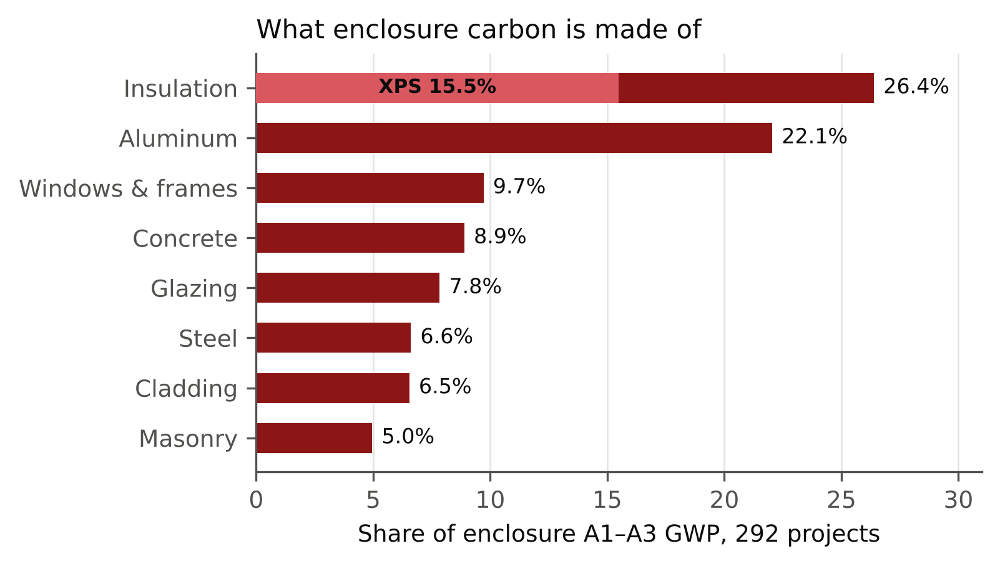
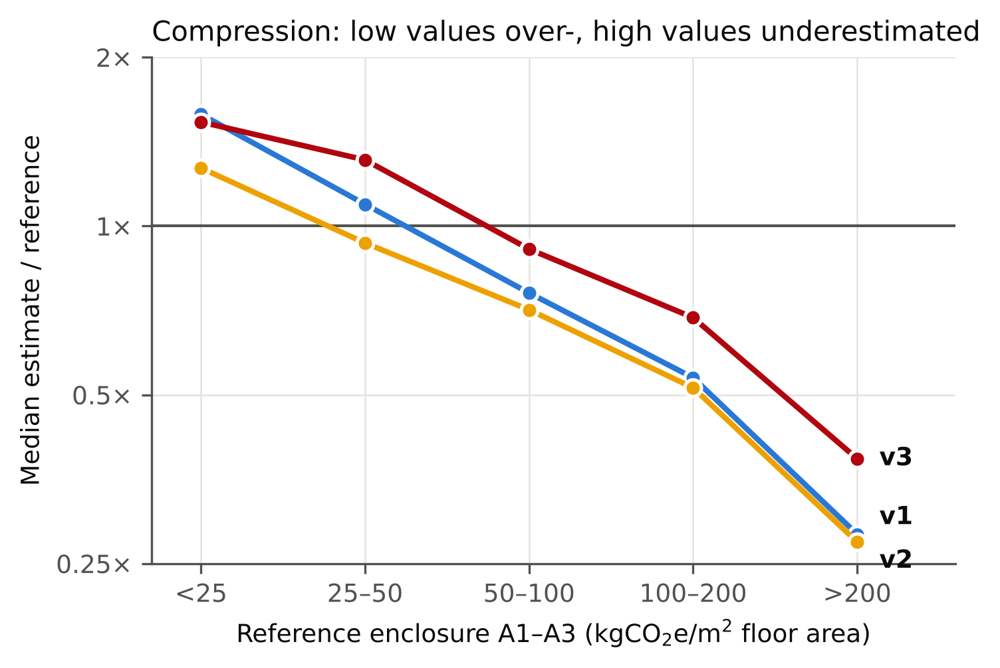
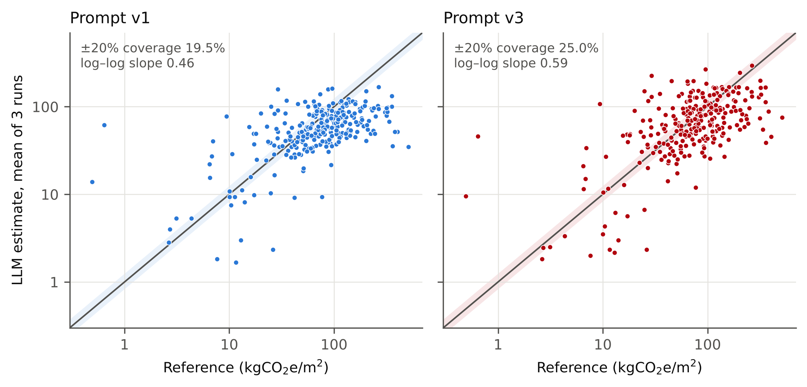
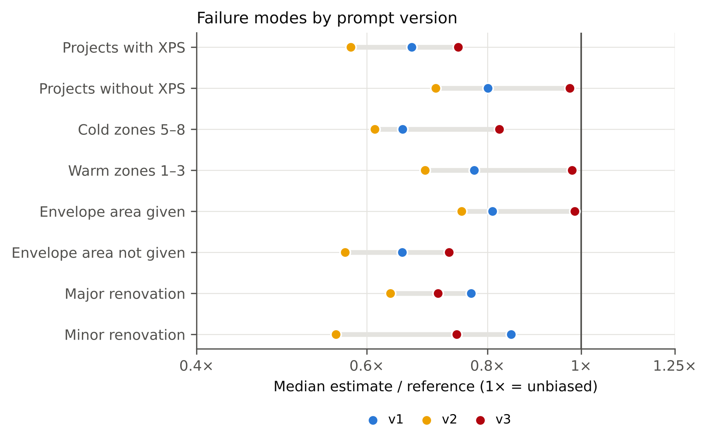
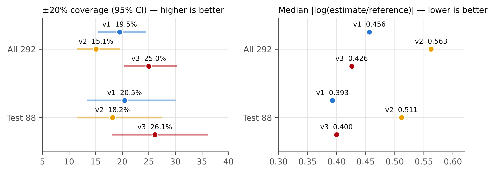
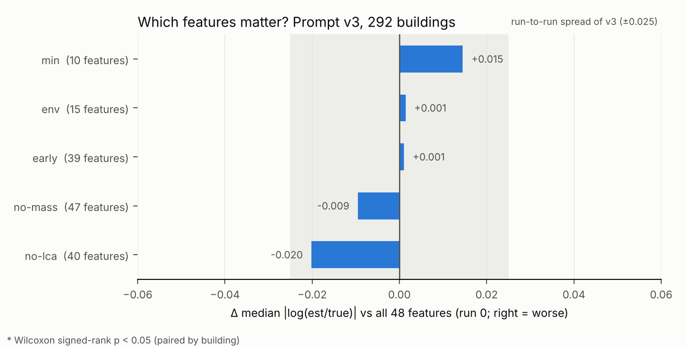

Question
Exterior-envelope choices lock in much of a building's embodied carbon at schematic design, when no LCA exists yet. Can a large language model, given only early-stage features, estimate the cradle-to-gate (A1–A3) embodied carbon of the enclosure, and which prompt design makes it better?
Data & ground truth
- 292 US/Canadian projects, harmonized WBLCA dataset (Benke et al., Sci. Data 2025): 928k material rows, 48 early-stage features.
- Ground truth: OmniClass Shell – Enclosure, stage A1–A3, kgCO2e per m² floor area. Median 78, range 0.5–514.
- 10 new buildings have no window/glazing data at all: incomplete reference LCAs, flagged.

XPS insulation is 15.5% of all enclosure carbon (43.6 kgCO2e/kg, the HFC-blown product in Tally/One Click LCA of the period).
Method
- 3 runs × 292 buildings per prompt; seeded shuffles, identical chunks → paired comparisons.
- Subagents read only their task file: no web, no code, no ground truth.
- Metrics: ±20% coverage, RMSE, |log(est/ref)|, bias (geometric mean), run-to-run CV.
- Held-out test set: 88 buildings (stratified, seed 226).
Baseline: why the model fails

The model compresses every building toward ~50–60 kgCO2e/m²: light enclosures are overestimated, heavy ones underestimated 3–4×.

Estimate vs. reference (line 1:1, band ±20%): v3 lifts the cloud toward the diagonal but the top end stays compressed.
Root causes, from 876 reasoning texts
- HFC-blown XPS is never considered: mentioned in 0.6% of answers. XPS explains about half of the bias (est/ref 0.72 → 0.84 when XPS is removed from the reference), and the cold-climate gap too.
- Envelope area: 0.81 when given, 0.65 when the model has to estimate it.
- Curtain-wall tail and renovations scoped too narrowly.
- The intensity per m² of envelope drives the error (r = −0.79), and no feature describes the wall assembly.
Largest overestimates = incomplete reference LCAs (median est/ref 3.1 for the 10 flagged buildings).
Three prompts
| Prompt | Coverage | RMSE | |log| med. | Bias | CV |
|---|---|---|---|---|---|
| v1 plain | 19.5% | 79.7 | 0.456 | 0.75 | 19.0% |
| v2 method + facts | 15.1% | 81.0 | 0.563 | 0.67 | 13.8% |
| v3 anchors | 25.0% | 76.0 | 0.426 | 0.86 | 12.5% |
v2: scope + step-by-step take-off + named materials
More consistent, but less accurate: 89% of answers still assumed polyiso roofs (roof intensity stayed at 35), bottom-up intensities were low (67 vs. 87 per m² of envelope), and "count only new materials" pushed renovations down.
v3: quantitative anchors where numbers are chosen
- Component A1–A3 table from EPDs & CLF baselines (walls, glazing, roofs by insulation, aluminum).
- Tool convention: legacy models often use HFC XPS, so include that case.
- Per-envelope sanity check; renovation rule that no longer subtracts.

v3 removes the bias for buildings without XPS (0.97), with a given envelope area (0.99) and in warm zones (0.98).
Held-out test & features

- All 292: v3 vs. v1 McNemar p = 0.085, Wilcoxon p = 0.053; vs. v2 p = 0.002.
- Test 88: v3 26.1% vs. 20.5% coverage, RMSE 69 vs. 74, not significant (p = 0.41). Every finding behind v2/v3 replicates on the 204 dev buildings.
- Feature study (figure below): 10 early-design inputs (climate, use, type, area, storeys, WWR, R-values) are as good as all 48. Removing the leakage-prone
mass_totaldoes not hurt. All differences are within run-to-run noise.

Takeaways
- LLMs give usable early-stage enclosure estimates for hotspot screening (¼ within ±20%, bias −14%), but not reliable building-level credit predictions.
- The error is structured (compression, material blind spots), so error analysis on the model's reasoning shows which prompt fix to make.
- The ceiling is information, not prompting: adding assembly type to the inputs is the next step.
Final prompt (v3, excerpt)
1. Areas. Use bldg_therm_env_area if given; otherwise take off roof, walls and glazing (bldg_wwr) and state the envelope/floor ratio. 2. Assemblies. Choose wall, glazing, roof; name insulation type and thickness. LCA models of this period often model roof and below-grade insulation as HFC-blown XPS -> include that case. 3. Intensities (A1-A3 per m2 of component), e.g. steel stud + metal panel 70-110 | brick on CMU 135-165 unitized curtain wall 150-210 | aluminum windows 95-140 roof + polyiso 20-28 | roof + HFC XPS 85-110 (up to 335-410) 4. Check: below ~50 per m2 of envelope -> something is missing. 5. Range incl. higher-carbon alternatives; do not anchor on a typical building. 6. Renovations: do not assume the envelope is kept. RANGE_kgCO2e_per_m2: <low> - <high>
Full prompts, code and all 5,000+ model answers: github.com/HeshanChen/CEE226LCA